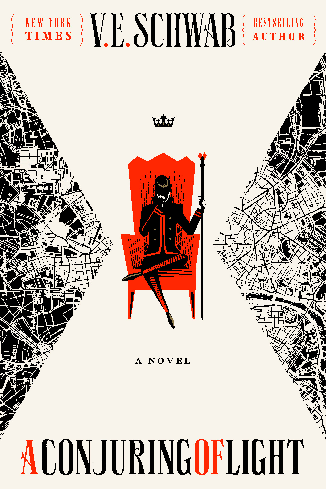

"A Conjuring of Light"
- Read on 2024-12-03
- Rating: ️️️️️
- Format: 🎧 (19 hours 3 minutes)
In fear of giving all my books the same rating, this one was at least the conclusion to a series, and having the resolution to the series is very nice. The one negative element (which I'm grasping for) is that I wish more of the books would have taken place in somewhere familiar - which would have been possible where the books took place (London). On the positive side... I enjoyed the character development, and the change in pace and environment this book represented. I think the combination of two different types of magic (though similar) was nice. I also appreciate from the series that those with an ability with magic weren't overwhelmingly favored in so many regards, as it seems happens in so many other series. I love the expansion of magical artifacts (as a thing that shakes up what I thought was possible). Lastly, I liked how the author took liberties with some of her characters that others might not.
- Prior: The Spy and the Traitor
- Next: Rhythm of War